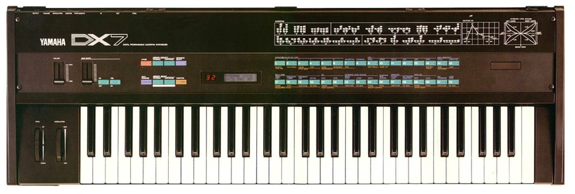

A digital synthesizer is a synthesizer that uses digital signal processing (DSP) techniques to make musical sounds. This in contrast to older analog synthesizers, which produce music using analoge electronics, and samplers, which play back digital recordings of acoustic, electric, or electronic instruments. Some digital synthesizers emulate analog synthesizers; others include sampling capability in addition to digital synthesis.
